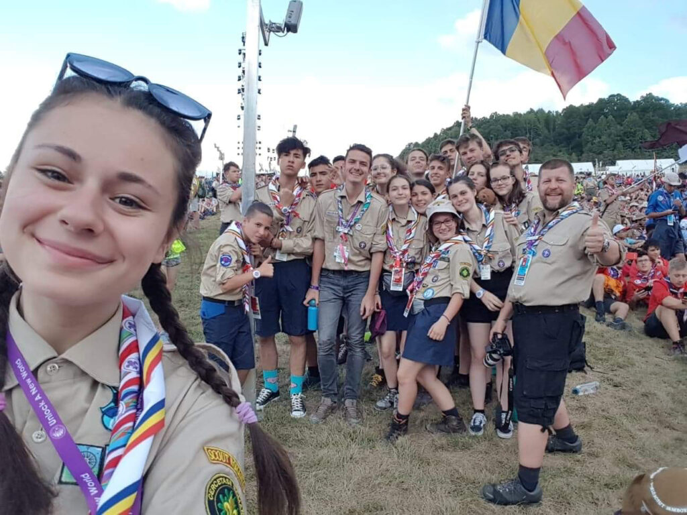

„A world unlocked" – Ana la Jamboreea Mondială

Pentru mine, această aventură a început în vara anului 2018, mai exact la sfârșitul lunii iulie, când, cu mari emoții am completat formularul de înscriere pentru 24th World Scout Jamboree, o jamboree ce urma să aibă loc vara următoare, în 2019, în Statele Unite ale Americii.
Peste câteva luni, pline de emoție, teamă și totuși speranță, am primit mailul de confirmare că fac parte din micuțul contingent al României care va participa, alături de alți 45 de mii de cercetași din restul lumii , la jamboree; întâmplător, sau poate nu, am citit mailul fix de ziua mea. A fost ca un cadou. Cel mai frumos cadou. Următoarele luni au trecut foarte repede, probabil datorită faptului că eram nerăbdătoare să plec. Între timp au urmat și două întâlniri ale contingentului, în care ne-am întâlnit toți membrii, ne-am cunoscut între noi, am început să legăm prietenii și am stabilit cum ne vom prezenta, ca țară, la jamboree.
Ziua cea mare în care urma să zburăm, la propriu, se apropia cu pași repezi, în ultimele zile dinaintea plecării deja nu mai puteam de entuziasm, număram orele și minutele. Pe 19 iulie ,cu mare grijă să nu uit ceva important acasă, mi-am făcut băgăjelul și pe 20 dimineață, printre toate îmbrățișările și pupicii de la cei de acasă, nici nu știu când m-am aflat în avion , speriată din cauza faptului că era primul meu zbor cu avionul. În prima escală am vizitat Belgradul, am făcut multe poze , am băut o cafea specific sârbească extraordinară, și ne-am pregătit cu toții de următoarele aproximativ 10 ore pe care le mai aveam de petrecut în avion. Pentru mine, gândul la destinație m-a făcut să nici nu simt timpul. Când am ajuns în State și am ieșit din aeroport, am rămas complet șocată de aerul de acolo, părea foarte greu de respirat, dar m-am acomodat foarte repede. Înainte să plecăm către locația Jamboreei, timp de două zile am vizitat orașul Washington, ne-am plimbat, am vizitat diferite obiective turistice, cum ar fi Casa Albă sau Monumentul lui Lincoln, am făcut multe poze pentru cei de acasă și într-un final am lăsat Washingtonul în urmă, plecând în alt stat, pentru măreața și mult așteptata Jamboree.
Totul a început bine, pe 23 iulie am ajuns în camp, uimită de faptul că văd cercetași absolut peste tot, oriunde mă uit. Eram sută la sută sigură că așa va fi, dar parcă tot a venit ca un șoc. Evenimentul a început cu ceremonia de Deschidere, unul dintre cele mai pline de emoție momente, în care am realizat cu adevărat unde mă aflu, cu cine sunt acolo, și ce urma să ma aștepte în următoarele zece zile. Acolo erau foarte multe activități, toate erau foarte interesante, așa că în fiecare zi ne era greu să ne decidem ce să facem. Eu am ales să fac activitați din toate domeniile, și mai ales lucruri pe care nu le pot face acasă, în mod normal. Consider că am făcut tot ce mi-am propus să fac, am învațat lucruri noi și foarte interesante, și cel mai important, m-am simțit bine peste tot. Personal, am participat la foarte multe activități acvatice, cum ar fi mersul cu caiacul, cu canoe și paddle boarding,singură, dar și cu alți oameni. Consider că în momentul acela chiar am simțit că știu să lucrez într-o echipă, realizând că, cu puțin efort din partea fiecăruia, am reușit să facem tot ce ne-am propus, adică să ne coordonăm și să nu cădem de pe placă . Am luat parte și la foarte multe activități ce îmi puneau în lucru atenția, direcția și puterea maximă de concentrare , adică aruncatul cu obiecte periculoase.Am aruncat cu cuțitul și cu toporul , am tras cu diferite puști și arme reale, mai mici și mai mari. Nu știu dacă e bine sau rău, dar mi-a plăcut foarte tare. Pe lângă activitățile ce constau în efort fizic, am fost și în locuri în care pur și simplu te relaxai, stăteai pe un scaun și învățai lucruri noi despre anumite teme, puteai sa dezbați diferite subiecte încât să înveți să te dezvolți pe tine personal, să te autocunoști și să aflii mai multe despre lumea în care trăiești, cum ar fi despre alte culturi, având ocazia chiar să discuți cu oameni din fiecare religie.
Între timp, pe lângă faptul că zilnic mergeam la activități și nu stăteam deloc la cort, decât seara când dormeam, mi-am făcut prieteni din toate colțurile lumii. Am schimbat și eșarfe cu ei, drept amintire. Când am plecat de acasă, mi-am propus să încerc să aflu lucruri noi despre țările din care era fiecare persoană, și mai ales poate să învaț ceva de la fiecare persoană în parte , sau invers. Acum, după ce Jamboreea s-a terminat, consider că m-am ținut de asta, și am făcut ce mi-am propus. Am cunoscut și oameni foarte importanți ai Organizației Mondiale a Mișcării Scout , adică Președintele și Secretarul. A fost fascinant, m-am simțit foarte norocoasă în acel moment, și nu doar eu, cred că toți care au avut ocazia asta. Am legat prietenii foarte strânse cu restul exploratorilor din contingentul României, pentru că mereu mergeam la activități împreună, pregăteam masa sau mergeam să ne băgăm telefoanele la încărcat , iar datorită lui buddy system (întotdeauna , oriunde mergeam, trebuia să fim câte doi) simt că m-am apropiat și mai tare de anumite persoane și asta mă bucură foarte tare.
Nici nu am simțit când au trecut zilele , îmi aduc aminte fix momentul în care îmi puneam eșarfa la gât, ținând steagul româniei în mână și mergând către scenă, cu lacrimi în ochi, către Ceremonia de Închidere. După mine, a fost cel mai impresionant , emoționant și “fără cuvinte” moment al Jamboreei, mai ales atunci când s-a auzit tare, în microfon ” The 24th World Scout Jamboree is officially over. Thank you all!” și când a început cel mai mare foc de artificii pe care l-am văzut în realitate toată viața mea. Toată seara am lăcrimat de fericire, datorită faptului că am fost acolo, gândindu-mă la momentele frumoase și la toate lucrurile de care am avut parte, iar în momentul în care am primit cea mai călduroasă îmbrățișare de la oamenii din centrul meu local, am dat frâu liber lacrimilor și știu că pentru câteva minute bune am plâns, bine, nu doar eu, ci și probabil trei sferturi din oamenii de la jamboree. Sunt sigură că și restul de un sfert, dar nu în văzul lumii.
Apoi, pe 3 august, ne-am făcut cu toți bagajele, ne-am urcat în autocar și am pornit către New York, locul în care urma să ne petrecem următoarele 5 zile. Cu fiecare pas pe care îl făceam, îmi veneau în minte cât mai multe filme și seriale la care m-am uitat și care erau filmate fix pe străzile din NYC , și nu-mi venea a crede ochilor. Bineînțeles că și acolo am vizitat foarte multe locuri și , chiar dacă a fost de scurtă durată, am încercat să simt cum e viața de newyorkez. A fost foarte interesant. Am văzut multe muzee, cum ar fi Madame Tussauds sau Memorialul 9/11, am vizitat locul în care se împodobește bradul de Crăciun anual și unde s-a filmat bine cunoscuta scenă din filmul Home Alone, ne-am plimbat cu vaporașul pe lânga insula Statuii Libertății și pe sub Brooklin Bridge, am fost la Consulatul General al României din NY și la Sediul Organizației Națiunilor Unite. Pe lângă asta, am avut ocazia să gustăm din măncărurile specific americane , care erau delicioase, dar…pline de calorii (majoritatea).
Pe 7 august, deja printre noi se simțea tristețea și melancolia, ne pregăteam să plecăm, luând cu noi toate amintirile, absolut toate momentele frumoase și bineînțeles câteva suveniruri pentru acasă. Eu cel puțin, mi-am lăsat o parte micuță din inimă acolo în America, cu speranța ca voi revenii peste câțiva ani.Drumul către casă a trecut foarte lent,în comparație cu cel de la dus. Am reușit să analizez tot ce se întamplase în ultimele trei săptămâni, realizând faptul că această experiență m-a făcut să am o privire de ansamblu asupra mișcării cercetașești la nivel mondial, m-a ajutat să mă autocunosc, să imi descopăr și să îmi înfrâng anumite limite, dezvoltându-mă pe mine , ca cercetaș și ca om de zi cu zi.
Când am ajuns în aeroport , mi s-a părut că nu mai era aceeași atmosferă, comparând sentimentul cu cel dinainte cu 20 de zile când toată lumea era entuziasmată. Am observat că toți eram puțini triști, datorită faptului că sigur am mai fi stat acolo, dar totuși fericirea pe care o simțeam parcă era alt tip de fericire, nu mai simțisem așa ceva până atunci. De atunci , din august, și până azi, 20 octombrie, când am scris articolul ăsta, încă povestesc prietenilor și familiei momente din aventura mea, încerc să aduc puțin din ce am învățat acolo și cercetașilor din centrul local din care fac parte , și poate cine știe, și la nivel național.
A fost o experiență cu totul și cu totul unică, din punctul meu de vedere , a fost experiența care m-a marcat, până la vârsta asta.
Ana Mică (Ana-Maria Radu, Explorator)